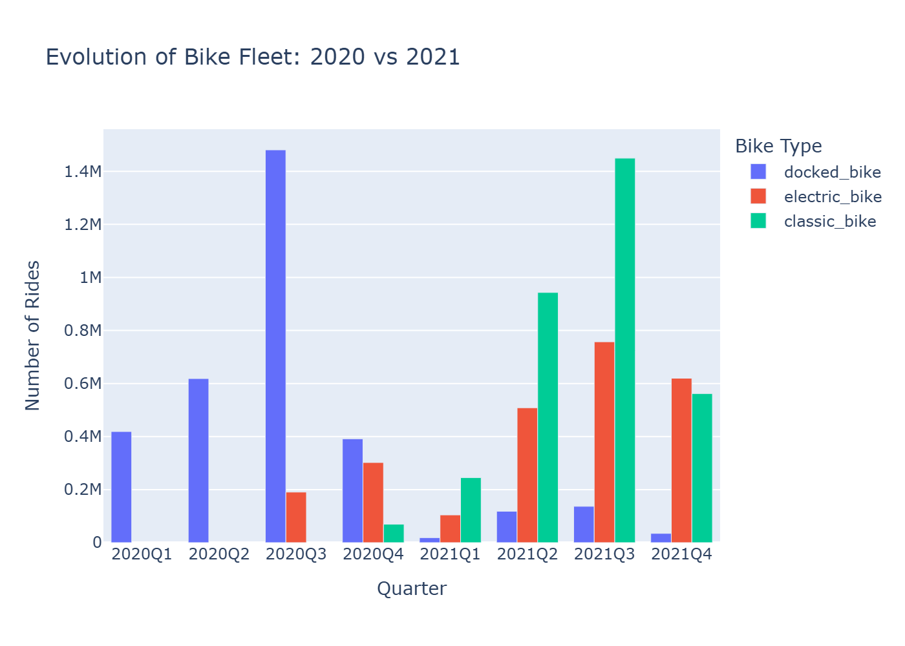
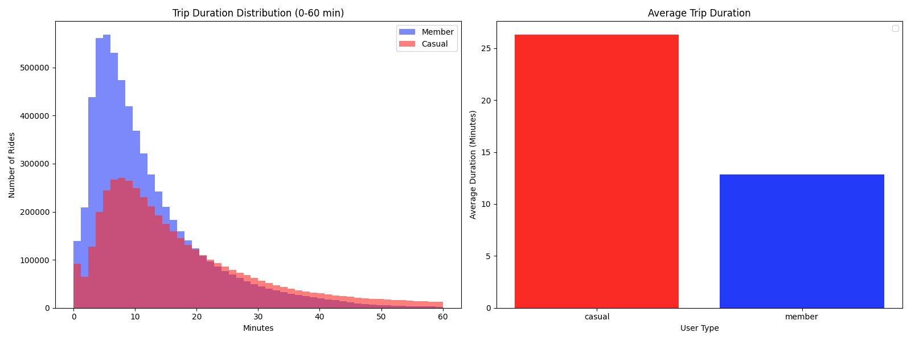
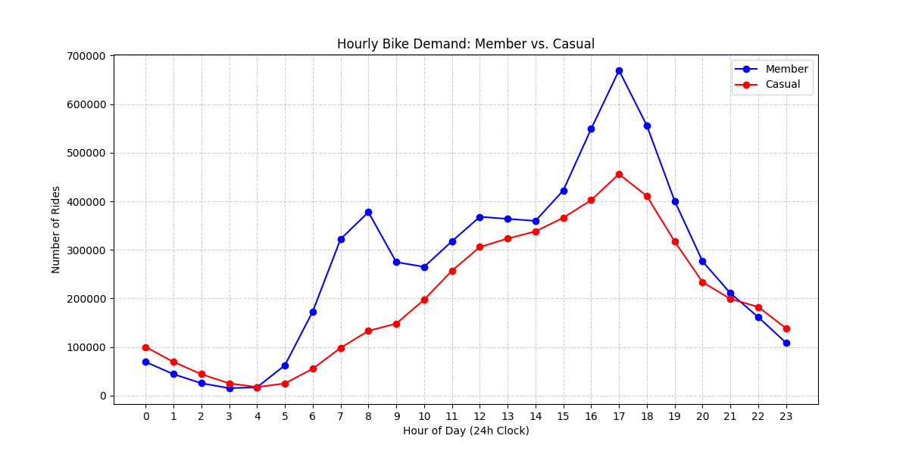
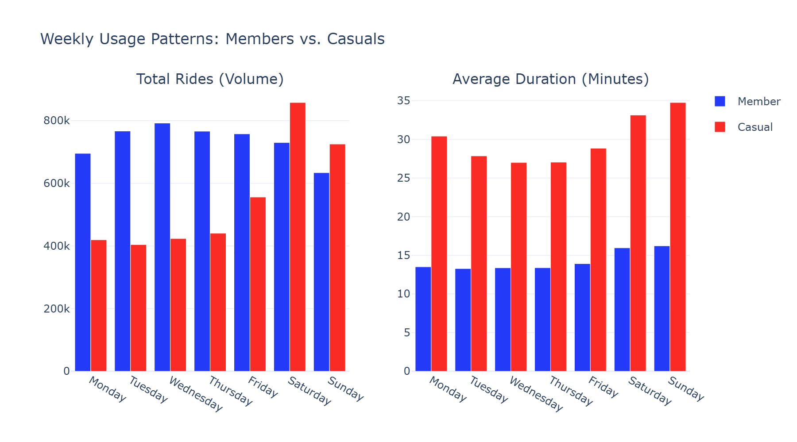
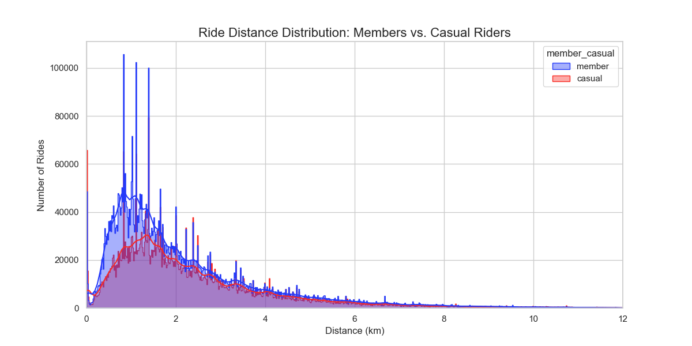
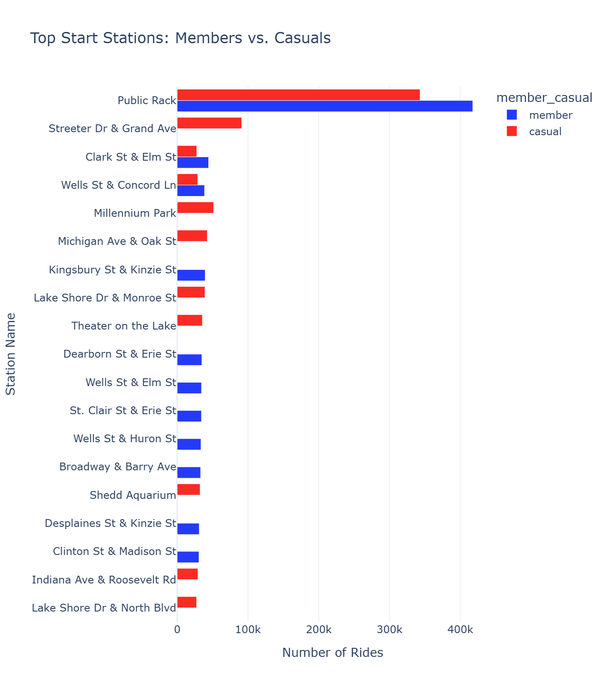

Historical Trip Data Analysis for Membership Conversion Strategy
Analyze historical trip data to identify trends between casual riders and annual members in order to drive membership conversions.
Casual riders are profitable, but annual members are the key to long-term growth.
Historical trip data from Cyclistic's bike-share system, including:
| Column Name | Missing Count | Missing % |
|---|---|---|
| Ride ID | 0 | 0% |
| Rideable Type | 0 | 0% |
| Start station name | 785,465 | 8.60% |
| Start station ID | 786,088 | 8.60% |
| End station name | 850,051 | 9.30% |
| End station ID | 850,512 | 9.31% |
| start_lat | 0 | 0.00% |
| start_lng | 0 | 0.00% |
| end_lat | 9,026 | 0.10% |
| end_lng | 9,026 | 0.10% |
| Member_casual | 0 | 0% |
Classic Bikes must be returned to a physical dock. Therefore, their coordinates almost always perfectly match a station location.
Electric Bikes are "dockless." Riders can park them at any public bike rack. Because there are thousands of bike racks in Chicago that are not official Divvy stations, these trips will have valid coordinates but no station record.
These coordinates are in the Far South Side of Chicago (near West Pullman/Roseland). In these neighborhoods, the distance between official stations is much larger than in the Downtown/Loop area.
Riders in these areas often use the "lock-to" feature on e-bikes to park closer to their actual destination rather than walking several blocks to a station.
A trip lasting more than 24 hours is usually considered a "Data Anomaly." This happens when a user (often a Casual rider) reaches their destination but doesn't push the bike into the dock hard enough to hear the "beep."
If a bike is taken and not returned to a station, the "trip" technically stays open in the database. Eventually, the system "force-closes" the trip after a certain period (24 hours) and marks the bike as missing.

💡 Data Cleaning Note: "Docked" and "Classic" represent the same physical bike. The name change in the database reflects a rebranding, not a fleet replacement. Always investigate category shifts before assuming real-world changes!
🔄 Standardization Decision: We consolidated the variable docked_bike
as classic_bike for all future analysis. While 2020 data was reviewed, this study
focuses on 2021–2022 because:
Summary: 10,629 rows (0.094%) had missing end station data.
duration_min > 480 AND end_station_name IS NULL
Reality: Bikes likely never returned, or were manually docked by a technician a day later.
duration_min < 480 AND end_station_name IS NULL
Reality: User likely tried to dock, but hardware failed to record the "End Event."
🔖 Archival: These 10,629 rows were stored separately for future investigation
and were not permanently deleted.
🔐 "Off-Dock Returns" for Classic Bikes: Classic bikes require physical docks, but when stations are full or riders are in a hurry, they may use the secondary cable lock to secure the bike to a nearby object (light pole, sign) next to the station. We labeled these as "Off-Dock Returns".
✅ Less than 0.1% data removal ensures minimal impact on analysis validity.





The "Public Rack" stations (created for electric bikes not parked in traditional stations) have by far the highest number of rides for both groups.
Interactive heatmaps showing station usage patterns for casual riders and annual members.
Fig. 5: Geographic distribution of casual rider trips
Fig. 6: Geographic distribution of member trips
Casual riders cluster around tourist and recreational areas, while members concentrate around commuting corridors and residential zones.
Implement a frequency-based conversion trigger.
Identify casual riders who exceed 3 rides per month. Use automated digital marketing to deliver a personalized cost-benefit comparison between their current spending and the annual membership.
Convert high-frequency casual users into stable, recurring revenue streams.
Adjust the casual-to-member pricing ratio.
Increase single-ride or day-pass pricing for non-members to:
Increase the financial incentive to switch by making casual usage relatively more expensive.
Introduce a seasonal or weekend-only trial membership.
Offer a discounted weekend-only membership for the first month, targeting casual riders who primarily ride during leisure periods.
Lower the barrier to entry and onboard users into the Cyclistic membership ecosystem, increasing long-term conversion potential.
Unified Objective: All three strategies work together to reduce friction, increase perceived value, and create habitual usage — the three pillars of successful membership conversion.